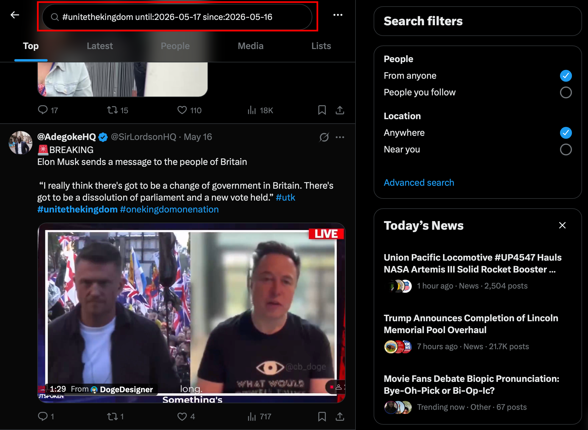
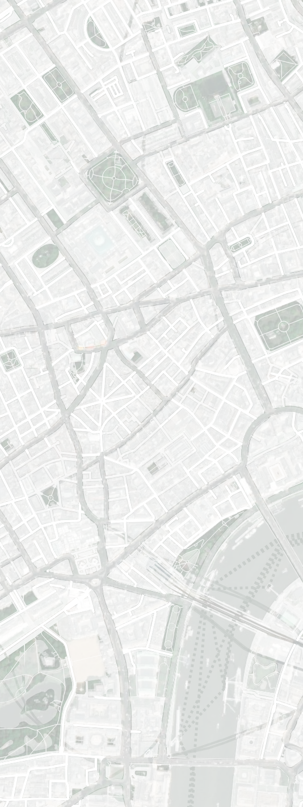

Investigating the ‘Hostile Environment’ online, how right-wing
networks manufacture false narratives.
The term ‘hostile environment’ refers to hostility as the weather
opposed to an explicit and sudden crisis; it is a steady background
condition rather than a one-off event. The violence it describes is
slow and ordinary and it hides in plain sight. It is normalised by
feedback loops (created by influential people) and the words they use
to describe it.
How does Britains hostile border relocate itself through public-lead
action, both in real life and on social media?
An ongoing investigation into how right-wing language is acting as a
catalyst towards a more hostile country on the topic of migration. How
can the analysis of one event, the ‘Unite The Kingdom’ march [16th of
May 2026], give us insight as too how a section of the general public
may carry views that are incommensurate with the ‘issues’ that they
find so fundamental.
In this investigation we acknowledge the ‘hostile environment’ as a
steady background condition rather than a one off event. The violence
it describes is slow and ordinary and hides in plain sight, normalised
by feedback loops and public rhetoric. We explore right-wing networks
of language and their active role in the creation and nourishment of
said hostile feedback loops or echo chambers.
Focusing on the language in use by the right, both physically at the
march and digitally on social media, we interrogate what
opinions/statements these people release into public view. During our
research we found two statements that were common-place across both
fields. “Unite the Kingdom” and “Stop the Boats”. Our investigation
focuses on the first.

Using ‘#UniteTheKingdom’ hashtag as our data gathering parameter, we
collected 2,400~ posts from ‘X’ created on the 16th of May. The
scraped data was then fed into an LLM which classified hostility
levels on an ordinal score from 0-3. Rather than classifying the
individual tweets in the traditional positive/negative sense, the
hostility levels accounted for the unique comment/response style
structure that characterises ‘X’, reading and analysing both the
comment itself and the original post/comment for hostility separately
before reaching a rounded conclusion.
Visualing Hostility
We worked on creating a visual that could communicate the language
used in these X posts. It was important to highlight how harmful
language can be camoflauged in hashtags but very much still present
and impactful.
March Timeline
At the core of our investigation was the “Unite the Kingdom” march
that took place on the 16th of May 2026. This march acted as the
epicentre for our analysis, using it as a way to anchor our
investigation in a very recent political moment that amplified the use
right-wing language and put it directly into the public view.
Below is an interactive timeline that geolocates videos taken from ‘X’
using the hashtag: ‘#UniteTheKingdom’. These videos are plotted at the
location they were taken along the route of the march, states when
these videos were posted on ‘X’ and the captions that they were posted
with.
The timeline allows you view the march through the eyes of a social
media platform, revealing how shared content can reciprocate and
magnify hostility, especially during an event designed to be hostile
in its nature.
Geolocated media
Use the right most scrubber to traverse through the journey of the
march

9 AM
11:59 PM
Rhetoric Research
The timeline traces a longer history of how migration has been spoken
about in Britain, from the early language of the “alien” to more
recent vocabularies of crisis, security, and border control. What
matters here is not a single speech or moment, but the gradual
hardening of a political common sense in which suspicion and exclusion
start to feel ordinary.
Set alongside it, the legislation shows how those shifts in language
are repeatedly translated into law and administration. Read together,
the two columns suggest that the hostile environment is not an abrupt
invention, but the outcome of a longer process in which rhetoric and
policy steadily begin to reinforce one another.
Rhetoric Timeline
A general guide to major immigration-related rhetoric shifts in the
UK, rating sentiment value for each era, and the legislation that
accompanied the journey.
Time
−ve sentiment
+ve sentiment
1900
1920
1940
1960
1980
2000
2020
1905
Pre-War Foundations
Early modern immigration control took shape through the
legal category of the alien, with restriction, inspection,
and exclusion becoming embedded in state practice. This era
established the basic grammar of suspicion, border
filtering, and selective admission that later migration
politics would build on.
1945
Post-War Reconstruction and Windrush
Postwar Britain needed labour and formally allowed broad
Commonwealth movement, producing a more open settlement
moment shaped by reconstruction, citizenship, and imperial
ties. At the same time, racial hostility, unequal treatment,
and anxiety about permanent Black and Asian settlement
exposed the limits of that inclusion.
1962
Powellism
Immigration became a central political issue as Commonwealth
entry was restricted and public debate increasingly framed
migration in terms of numbers, race, belonging, and national
decline. This era marks the mainstreaming of restrictionist
language, culminating in Powellism as a powerful rhetorical
force rather than an isolated outburst.
1978
Neo-liberalism
The politics of immigration shifted from overt racial panic
alone toward a more bureaucratic language of citizenship,
connection, and who properly belongs. Exclusion was
increasingly expressed through legal status, settlement
rights, and nationality rules, making restriction appear
more administrative and less openly ideological.
1990s
Asylum Panic
The asylum seeker emerged as a distinct political and media
figure, often framed through ideas of fraud, burden,
disorder, and pressure on local services. This era is
important because hostility was recast as administrative
realism and asylum control became a major object of
legislation and public anxiety.
2000s
Securitisation
Migration policy became more tightly linked to security,
border management, documentation, and state capacity,
especially in the context of terrorism and intensified
asylum control. The key shift here is from immigration as a
social issue to migration as a problem of risk, enforcement,
and managerial competence.
2010s
Brexit
Immigration control moved deeper into everyday life through
the hostile environment, which deputised landlords,
employers, banks, and public services as border enforcers.
Brexit politics intensified the language of control and
sovereignty, while the Windrush scandal exposed the human
consequences of status checks and administrative suspicion.
2020s
Today
The current period is defined by deterrence politics,
small-boats rhetoric, and a sharper divide between
supposedly genuine and illegitimate migrants. Policy and
discourse focus on illegality, removability, and spectacle,
with increasingly punitive approaches presented as necessary
to restore border control.
Methodology
This graph tracks recurring immigration frames across coverage in the
Guardian and the Telegraph using a dictionary-based text analysis.
Each article is treated as one observation, with headline, standfirst,
trail text, and body text combined into a single analysis field before
lexical matches are counted and aggregated by year.
The four frame families used here are threat/crisis, control/legality,
humanitarian, and integration/economy. To make years and outlets
comparable, the graph uses normalized frequencies per million words
rather than raw counts alone, so the lines show the density of framing
language in the coverage rather than simply the volume of articles
published.
MEDIA FRAMES
Yearly frame frequency per million words in the Guardian and
Telegraph.
Reading the graph
Read the chart as a measure of changing rhetorical emphasis over time,
not as a claim that each article belongs to only one frame. The wider
pattern suggests that humanitarian language remains especially
prominent in the Guardian, while the Telegraph more often shows
stronger control/legality and mixed crisis framing, particularly in
later years.
Across both outlets, the mid-2010s and 2020s appear as important
periods of rhetorical change, with sharper peaks in crisis and control
language and a weaker emphasis on integration and economy than in
earlier phases. These trends are best used as a guide for closer
reading rather than as a complete interpretation on their own.
Media
Image / Video
Video
Media Item Title
Short description of this media item. Source, date, or context.
Image / Video
Image
Media Item Title
Short description of this media item. Source, date, or context.
Image / Video
Document
Media Item Title
Short description of this media item. Source, date, or context.
Image / Video
Video
Media Item Title
Short description of this media item. Source, date, or context.
Image / Video
Image
Media Item Title
Short description of this media item. Source, date, or context.
Image / Video
Document
Media Item Title
Short description of this media item. Source, date, or context.
Glossary
Hostile EnvironmentCategory
The term “hostile environment” refers to legislation introduced in
the UK with the aim of denying illegalised migrants access to work,
housing, services and education. Far from being an exceptional
condition, however, this process of making (urban) space unliveable
for some resonates with the ways in which certain “natural” terrains
(oceans, deserts, mountains) and their material geographies have
been weaponised to deter and expel migrants. The term seeks to
capture these distant but interconnected processes, investigating
how certain forms of radicalised violence have become as pervasive
as the climate and how a generalised atmosphere of hostility affects
different modes of existence, particularly those that are classified
as alien as opposed to native. Hostile environment attunes our
senses and sensibilities to forms of suffering that are ordinary
rather than catastrophic and crisis-laden, forms of violence that
are invisible not because they are hidden, but because constructed
by powerful actors as legitimate through relentless exposure and
through the use of language.
The Centre for Research Architecture Website
Term TwoCategory
Definition of the term. Explain what it means in the context of this
project, its legal or spatial significance, and any relevant nuance.
Term ThreeLegal
Definition of the term. Explain what it means in the context of this
project, its legal or spatial significance, and any relevant nuance.
Term FourSpatial
Definition of the term. Explain what it means in the context of this
project, its legal or spatial significance, and any relevant nuance.
Term FivePolitical
Definition of the term. Explain what it means in the context of this
project, its legal or spatial significance, and any relevant nuance.